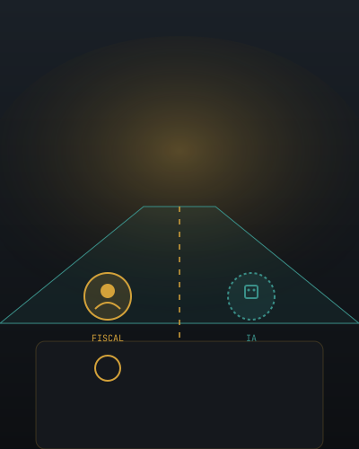
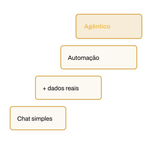
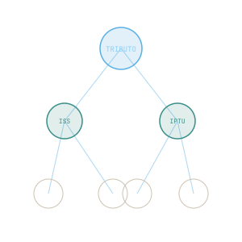
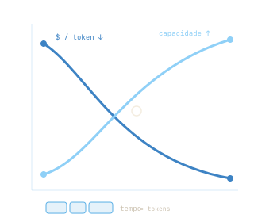

Da fiscalização ao lançamento: a IA a serviço da Fazenda Pública Municipal.
[ Seu nome ] · [ Instituição ] · [ Data ]
O caminho de hoje
Quatro estações.
01Por que a IA importa — e por que agora
02Quem, no mundo real, já trilha esse caminho
03A escada de conceitos: do chat ao agente
04Demonstrações ao vivo & como começar com segurança
O descompasso
Os dados crescem. A equipe, não.
Mais notas fiscais de serviço, mais inscrições em dívida ativa, mais processos — e a mesma quantidade de fiscais. Ao mesmo tempo, a Lei de Acesso à Informação e a Lei de Responsabilidade Fiscal vigiam cada passo.
A análise ainda é feita, hoje, contribuinte por contribuinte. A IA não substitui o poder de polícia. Ela amplia o alcance dos seus olhos.
Clique para revelar as gerações
70 anos de história
A mesma tarefa, cinco linguagens.
Binário01001000 01001001 00100000
COBOLMOVE SALDO TO TOTAL.
SQLSELECT saldo FROM contas;
Pythontotal = sum(c.saldo for c in contas if c.em_aberto)
IA · Prompt"mostre os contribuintes com ISS em aberto"
Clique para revelar os números
A complexidade brasileira
O oceano em que vocês nadam.
+400 mil
normas tributárias editadas desde a Constituição de 1988
~46/dia
alterações na legislação a cada dia útil
1.500 h
por ano para uma empresa cumprir obrigações fiscais — entre as piores do mundo (Banco Mundial)
Antes mesmo de absorver a Reforma da Emenda Constitucional nº 132/2023. Nenhum humano mantém isso de cabeça enquanto cruza milhões de lançamentos.
Clique para revelar as manchetes
Quem já está nessa estrada
Não é futuro. É notícia de jornal.
Contec · Itaú & Santander
Bancos usam IA para rastrear ações suspeitas e barrar ameaças — R$ 11 bi investidos pelo Itaú em tecnologia (2024)
Feedzai · 2025
9 em cada 10 instituições financeiras já combatem fraudes com soluções de IA
Serpro · Febraban
Empresa pública apresenta IA contra fraudes e deepfakes em congresso do setor
Polícia Federal · 2025
42,5% das fraudes financeiras no país já envolveram ferramentas de IA
O ecossistema mundial se divide em duas camadas: empresas horizontais (a fundação, os grandes modelos) e verticais (especializadas — jurídico, contábil, fiscal). O município não constrói o modelo: escolhe bem a camada vertical.
O papel do fiscal
Copiloto. Nunca piloto.
A IA tira o trabalho mecânico e devolve o que define a profissão: análise, interpretação da norma, juízo.
A decisão de autuar e o lançamento do crédito tributário são exercício do poder de polícia — e o poder de polícia, por lei e por natureza, é indelegável. A máquina não tem, e não pode ter, essa competência. Ela é de vocês.

O fiscal aos comandos — a IA, ao lado, ampliando o alcance
O que a IA já faz
O velho 5W2H, respondido por máquina.
Por décadas o computador só respondia ao fácil: quem, quando, onde. Bastava consultar um banco. O salto da IA está no difícil — o porquê e o como.
What · descreve
Why · explica
Who · identifica
When · data
Where · localiza
How · executa
How much · estima
→ a IA propõe; você decide
Limites — de máquinas e de humanos
Nenhum dos dois é infalível.
A IA tem alucinações — pode inventar um artigo de lei com cara de verdade — e limite de memória. O humano se cansa, se distrai, tem vieses, não lê milhões de registros.
A solução não é confiar cego em nenhum. É desenhar o trabalho para que um corrija o outro: a máquina amplia o alcance, o humano valida o juízo. Os erros de um não são os erros do outro.
Clique para subir a escada
Níveis de maturidade
Uma escada, quatro degraus.
Muita gente acha que IA é só o chat. É só o primeiro degrau. No topo estão os sistemas agênticos: agentes autônomos que planejam, dividem o trabalho e colaboram entre si.

Clique para o multiplicador
A distinção que muda tudo
Eficiência não é eficácia.
Eficiência
Fazer a tarefa do jeito certo — com menos esforço e menos tempo.
Eficácia
Fazer a tarefa certa — aquela que realmente produz resultado.
10×
O profissional sênior, que já sabe qual é a tarefa certa, multiplica a produtividade ao delegar a execução à IA. Nas mãos erradas, a IA só acelera o erro.
Dados, governança & LGPD
Governança não é freio. É a condição.
Sem dado de qualidade, não há IA confiável. No setor público, ela opera sob a LGPD e o sigilo fiscal, com controle de acesso e supervisão humana.
Se a IA aponta um contribuinte, ela precisa explicar o porquê — como um auto de infração precisa de motivação. IA sem fundamentação não se sustenta num processo. Assim como um lançamento sem motivação não se sustenta.
A fundação invisível
A camada ontológica.
Um mapa de significados que ensina à máquina o que é um contribuinte, um fato gerador, o que separa um débito suspenso de um em dívida ativa.
É para a IA o que as definições do Código Tributário são para o Direito. Sem o mapa, a IA adivinha. Com ele, ela raciocina sobre a realidade jurídica do município.

Demonstração ao vivo · 6 etapas
Do chat ao enxame de agentes
Use as setas ou clique nas etapas · troque os data-src
Chat com anexo. O primeiro degrau: o fiscal anexa um documento — uma declaração, um parecer, uma lei — e conversa com a IA sobre ele em linguagem natural.
https://seu-chat-com-anexo.local
MCP — dados de mercado. A tomada universal da IA busca cotações ao vivo e gera uma recomendação fundamentada. A mesma mecânica pode ler a base de arrecadação, com acesso controlado e rastreável. Recomendação, não ordem.
https://seu-mcp-financeiro.local
Agente autônomo. Um agente lê dezenas de declarações em PDF, extrai os dados e preenche uma planilha sozinho. O que tirava um dia de digitação acontece enquanto você fala.
https://seu-agente-autonomo.local
Busca inteligente: RAG + Ledger.RAG consulta a lei (CTN, Código do Município); Ledger guarda o dado auditável. Em volta: harness (fluxo), guardrails (segurança e sigilo) e agents (execução). Resposta com a base legal citada.
https://seu-sistema-rag-ledger.local
Dashboard em tempo real · Superset. Arrecadação, inadimplência e dívida ativa viram painéis vivos. O fiscal aplica um filtro — ISS por setor — e o painel responde na hora, sem chamado para a TI.
https://superset.suaprefeitura.gov.br/dashboard
Enxame de agentes. O topo da escada: vários agentes especializados atuam em paralelo — um extrai, outro concilia, outro busca inconsistências — e entregam ao fiscal o resultado consolidado para validação.
https://seu-enxame-de-agentes.local
Proposta de implementação
Generativa + Machine Learning.
Três frentes para a Fazenda: detecção de inconsistências, análise preditiva de arrecadação e inadimplência, e auditoria assistida por risco.
A IA generativa raciocina, mas é imprecisa com números. Combinada a modelos estatísticos e de machine learning treinados no histórico do município, a seleção de um contribuinte vem com uma probabilidade calculada, mensurável e auditável — não um palpite. A máquina indica e fundamenta; quem lança o crédito é o fiscal.
Clique para as 5 armadilhas
Da POC à escala
Comece pequeno. Prove. Depois escale.
A POC é o teste de bancada antes de comprar a fábrica — um caso real, de alto valor e baixo risco, como a triagem de inadimplência de ISS.
×1Querer fazer tudo de uma vez
×2Escolher um caso sem dor real
×3Aplicar IA sobre dados sujos
×4Esquecer de treinar as pessoas
×5Não definir como medir o sucesso
Clique para revelar as curvas
Os custos da IA
Mais barato. E melhor.
A IA cobra por token — o "selo postal" da era da IA. Um token é um pedaço de texto, cerca de 4 letras, ou ¾ de palavra. Você paga pelo que envia e pelo que recebe.
Duas curvas se cruzaram: o preço por token despencou em ordens de grandeza, enquanto a capacidade disparou — modelos que leem centenas de páginas de uma vez. Tarefas inviáveis há 3 anos hoje custam centavos. Como o armazenamento e a energia solar: a barreira deixou de ser o custo.

Uma nova revolução
De novidade a infraestrutura.
1ªMáquina a vapor
2ªEnergia elétrica
3ªInternet
AgoraInteligência Artificial
Adotar a IA cedo, com governança, é como ter sido das primeiras cidades a ter luz elétrica: uma vantagem que se acumula. A pergunta não é se — é quando.
A eletricidade deixou de ser novidade e virou rede invisível — a IA segue o mesmo caminho